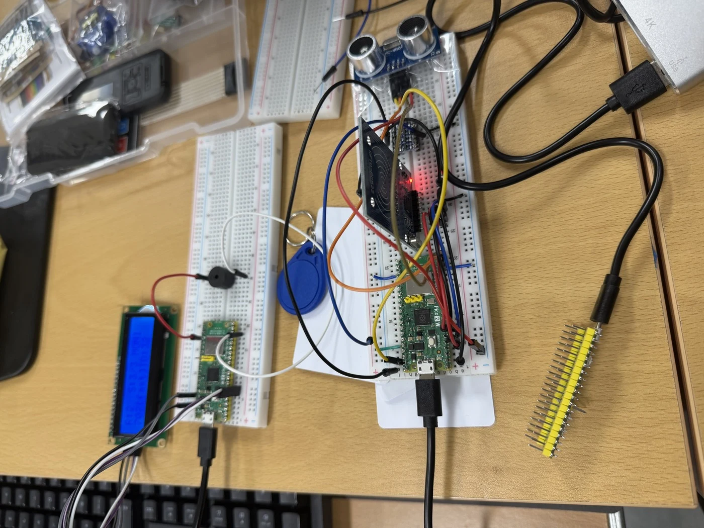
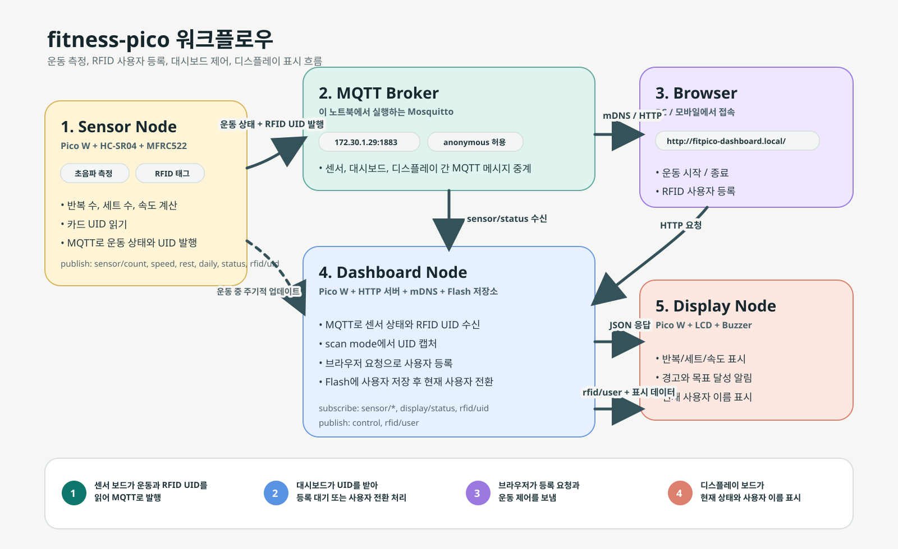
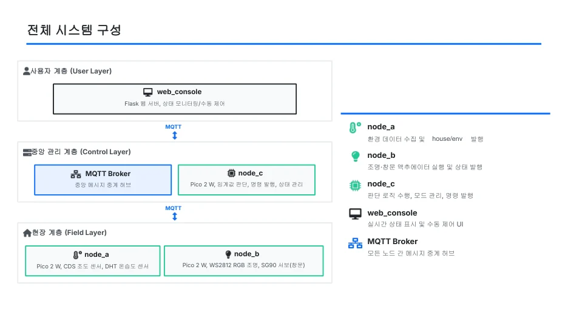
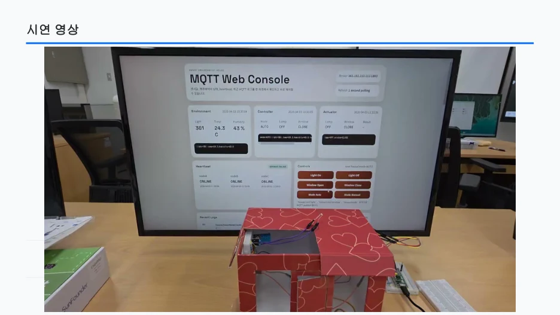
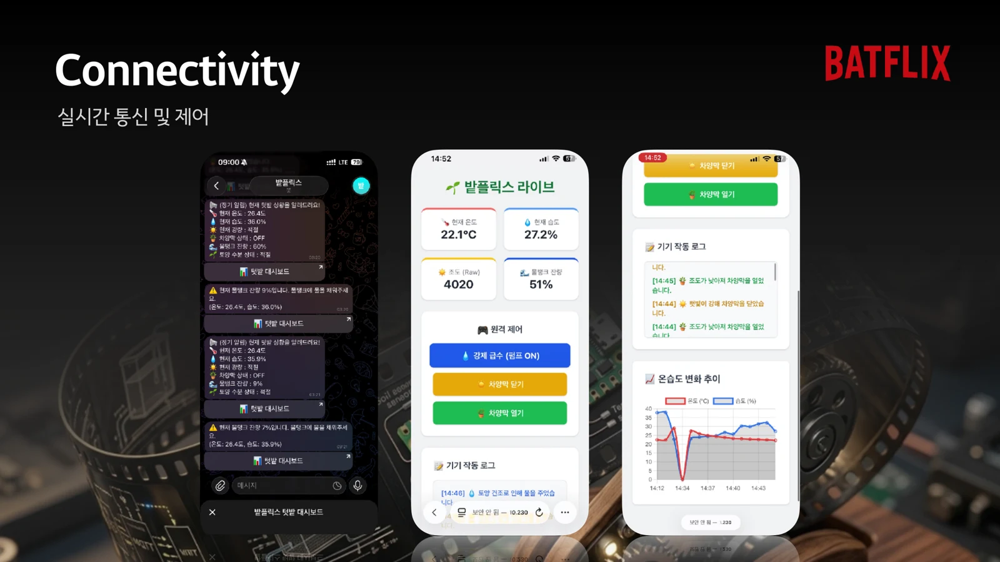
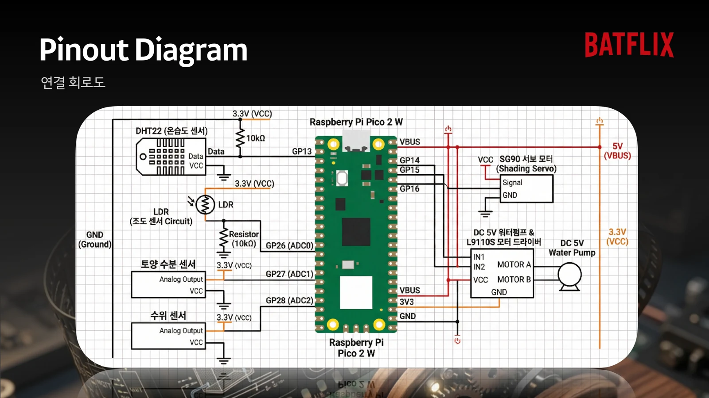
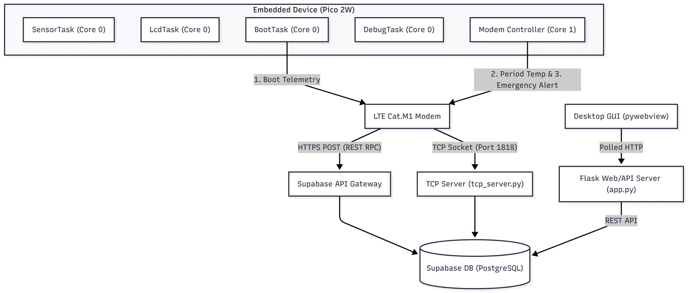
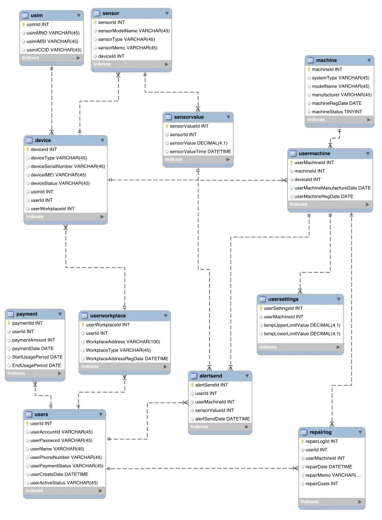
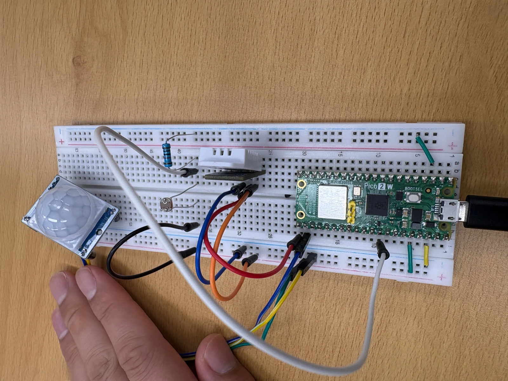
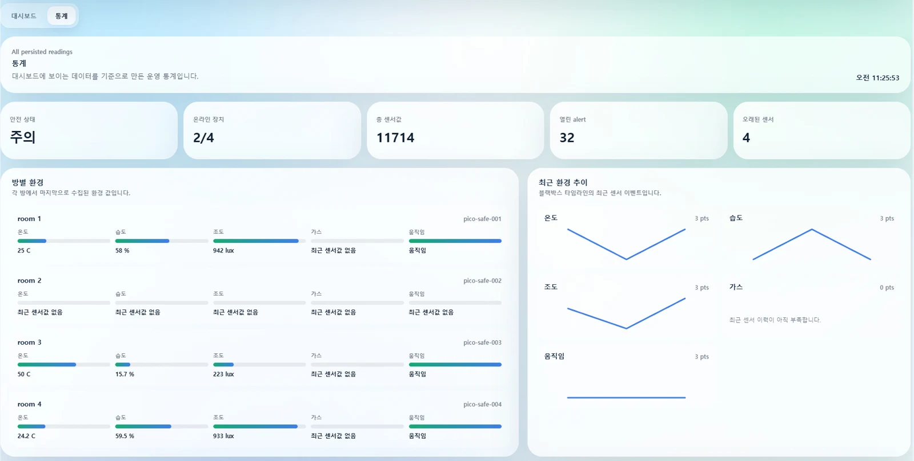

EDUCATION ARCHIVE / KOREA UNIVERSITY SEJONG / 2026
배운 기술을 연결한
다섯 가지 IoT 프로젝트
고려대 세종 IoT 과정 · 1차·2차 중간 팀 프로젝트
지역·산업맞춤형 인력양성사업
지능형(AI) 사물인터넷(IoT) 소프트웨어 개발자
고려대학교 세종HRD사업단이 운영한 IoT 소프트웨어 개발자 양성 과정. 센서·임베디드부터 데이터·사용자 화면까지, 하나의 서비스가 동작하는 과정을 실습으로 배웠습니다.
- 교육 운영
- 고려대학교 세종HRD사업단
- 교육 장소
- 고려대학교 세종캠퍼스 학술정보관
지하 1층 B107C 미래실 - 전체 과정 모집 안내 기준
- 2026.03.09–07.24 · 97일 · 760시간
- 이 글의 강의 범위
- 최수길 담당 수업·실습과 중간 프로젝트
전체 과정의 최종 프로젝트는 제외
운동·주거·텃밭에서 시작한 첫 프로젝트가 원격 온도 관제와 공간 안전 관리로 확장됐다. 센서 값을 읽는 일에 통신·저장·화면·운영 절차를 더하며 팀마다 하나의 흐름을 완성해 갔다.
작은 시작 · C 언어 볼링 점수 계산
3월 20일의 미니 실습에서는 프레임별 점수, 스트라이크와 스페어 규칙을 배열·조건문·함수로 표현했습니다. 언어 실습에서 문제를 나누어 푸는 경험을 거친 뒤, 1차에는 세 팀, 2차에는 다시 구성한 두 팀으로 IoT 프로젝트를 진행했습니다.
PROJECT I · 2026.03.30–04.03
fitness-pico · 푸시업을 세고 운동 상태를 알려주는 장치
이상수 · 박찬웅 · 홍지나
- RFID 사용자 선택
- 거리 변화 측정
- MQTT 상태 전달
- 웹·LCD 피드백

크게 보기 ↗fitness-pico 1차 프로젝트 기술서 · 2쪽 수록 사진

크게 보기 ↗팀 저장소 · docs/assets/fitness-pico-workflow.svg
운동 횟수를 직접 세는 대신 초음파 센서가 몸의 움직임을 읽도록 했다. RFID로 사용자를 선택하고, 푸시업 횟수와 세트 진행 상황을 웹 화면과 LCD로 확인하는 운동 보조 장치를 만들었다.
세 대의 Pico 2 W가 센서·대시보드·표시 역할을 나누었다. HC-SR04 거리 변화가 횟수로 바뀌면 MQTT로 상태를 전달하고, LCD와 부저가 진행 상황과 운동 속도 알림을 보여준다. 브라우저에서는 운동을 시작하거나 중지한다.
이상수는 대시보드와 API·데이터 집계를, 박찬웅은 거리 센서와 RFID를, 홍지나는 표시 보드·LCD·부저와 발표·시연을 맡았다. 센서 값 자체보다 운동 동작을 어떤 기준으로 한 번으로 셀 것인지가 중요한 구현 문제였다.
구현의 중심
사용자 선택부터 운동 측정·상태 표시까지 세 보드의 메시지 흐름을 연결했다.
사용 조건
거리 기준과 센서 배치에 따라 횟수 판단이 달라질 수 있다. 운동 보조용 교육 시제품이다.
PROJECT I · 2026.03.30–04.03
스마트 환경제어 홈IoT · 집의 상태를 읽고 반응하기
정귀인 · 황지용 · 김도경
- 환경 측정
- 제어 기준 판단
- 조명·창문 구동
- 웹 상태 확인

크게 보기 ↗스마트 환경제어 홈IoT 발표자료 · 4쪽

크게 보기 ↗스마트 환경제어 홈IoT 발표자료 · 15쪽의 시연 장면
온습도와 밝기를 읽는 집을 넘어, 환경에 맞춰 조명과 창문이 반응하는 모형 스마트홈을 만들었다. 센싱·구동·중앙 제어를 세 보드로 나누고 Flask 웹 콘솔에서 상태와 제어 결과를 확인했다.
온습도·조도 센서 값은 MQTT를 거쳐 제어 기준과 비교된다. WS2812 LED와 서보가 결과를 표현하며, 자동 모드와 수동 모드를 구분해 서로 다른 명령이 충돌하지 않도록 했다. 장치 연결 상태를 확인하는 하트비트도 함께 다뤘다.
정귀인은 중앙 제어와 웹 콘솔을, 황지용은 구동 노드와 하드웨어를, 김도경은 센싱 노드와 문서를 담당했다. 각자 만든 노드를 같은 메시지 규칙으로 묶어 모형 집과 관제 화면까지 연결했다.
PROJECT I · 2026.03.30–04.03
밭플릭스 · 작은 텃밭을 원격으로 돌보기
장세강 · 전제윤 · 박시영
- 텃밭 상태 측정
- 급수·차광 판단
- 펌프·차양 제어
- 대시보드·알림

크게 보기 ↗BATFLIX 발표자료 · 7쪽, 대시보드와 알림 화면

크게 보기 ↗BATFLIX 발표자료 · 10쪽, 배선 자료
밭플릭스는 온습도·빛·토양 수분·물통 수위를 모아 텃밭의 상태를 보여주는 스마트팜이다. 흙이 마르면 펌프를 작동시키고, 햇빛 조건에 따라 차양을 움직이며, 스마트폰에서 상태와 알림을 확인하도록 구성했다.
Pico 센서·구동부와 Python Flask 서버를 MQTT로 연결했다. 웹 화면에는 그래프와 장치 로그를 표시하고 Telegram으로 상태를 알렸다. 보드 메모리 제약을 겪으며 웹 처리를 서버 쪽으로 옮기고, 조도 기준과 서보 동작도 조정했다.
장세강은 서버와 MQTT 통합을, 전제윤은 토양 수분·수위·펌프를, 박시영은 온습도·조도·차양과 시연 자료를 맡았다. 센서가 알려주는 상태를 실제 급수·차광 동작으로 바꾸는 것이 팀의 핵심 경험이었다.
PROJECT II · 2026.06.01–06.05
냉동공조 관제 · 멀리 있는 장치의 온도 확인하기
장세강 · 이상수 · 김도경 · 전제윤 · 홍지나
- 온도 주기 측정
- 셀룰러 전송
- DB 이력 저장
- 온도 관제

크게 보기 ↗2차 1조 프로젝트 기술서 · 시스템 구조도

크게 보기 ↗2차 1조 프로젝트 기술서 · 데이터베이스 설계도
Wi-Fi가 없는 환경에서도 냉동공조 장치의 온도를 확인할 수 있도록 셀룰러 통신을 적용했다. Pico 2 W가 NTC 온도 센서를 읽고 HL7811 모뎀의 LTE Cat.M1·NB-IoT 통신으로 서버에 측정값을 전송하는 관제 프로젝트다.
FreeRTOS에서 센서·표시·통신 작업을 분리하고 HTTPS로 Supabase 데이터베이스에 값을 보냈다. 기술서의 기본 설정은 1초 주기 측정과 20분 주기 전송이며, Flask·PyWebView 화면에서 온도 그래프와 기록을 확인하도록 구성했다.
장세강은 펌웨어·통신 통합, 이상수는 시각화·로그, 김도경은 백엔드·DB, 전제윤은 인증·백엔드, 홍지나는 화면 구성과 발표를 맡았다. 팀은 센서와 통신뿐 아니라 장치·사용자·알림을 묶는 데이터 구조까지 설계했다.
프로젝트 범위
수업 당시의 온도 수집·전송·관제 구조를 소개한다. 이후 별도 저장소에서 이어진 제품 고도화와 구분한다.
설계의 초점
통신 주기와 측정 주기를 나누고, 장치 연결·온도 이력·이상 상태를 관리하는 흐름을 만들었다.
PROJECT II · 2026.06.01–06.05
Pico SafeRoom · 센서 알림을 운영자의 대응으로
정귀인 · 황지용 · 박찬웅 · 박시영
- 센서·연결 상태 수집
- 이벤트·경고 생성
- 운영자 확인·기록
- 대응 이력 조회

크게 보기 ↗Pico SafeRoom 2차 프로젝트 기술서 · 5쪽 수록 사진

크게 보기 ↗Pico SafeRoom 2차 프로젝트 기술서 · 7쪽 수록 화면
1차 스마트홈에서 한 걸음 더 나아가, 여러 공간의 센서를 모니터링하고 이상 상태에 대응하는 운영 화면을 만들었다. 온습도·움직임·조도 데이터와 노드 연결 상태를 모아 경고와 확인 절차로 이어지도록 했다.
MQTT 수집기, FastAPI·SQLite 백엔드, 작업 처리부와 React·PyWebView 화면으로 역할을 나누었다. WebSocket으로 상태를 전달하고, 경고 확인·메모·체크리스트와 보고 흐름을 붙여 단순 센서 표시를 넘어 운영 기록을 남겼다.
정귀인은 백엔드·DB·프로세스 통합을, 황지용과 박시영은 센서 펌웨어와 MQTT를, 박찬웅은 화면과 WebSocket·PyWebView 연동을 맡았다. 인터페이스를 먼저 맞추고 각 부분을 연결하는 경험이 프로젝트의 중심이다.
확인할 수 있는 결과
기술서에는 실물 센서 노드와 통계·상태 대시보드가 남아 있다. 네 공간을 등록해 다루는 구조를 설계했다.
구현 범위
네 보드 전체의 현장 연결 검증은 별도 과제로 남았다. 가스 값의 모의 입력과 실제 센서 측정을 구분하며, AI 분석 완성 사례로 소개하지 않는다.